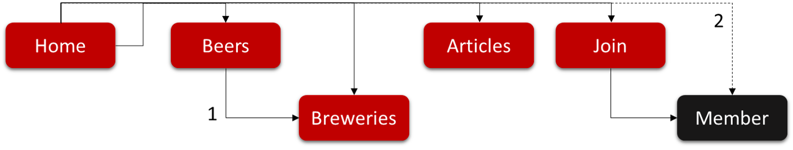

Vicus Brits: Large Coursework
Introduction: What is the essential story being told by your site and what type of structure did you choose to implement?
Site Map
The website is for a group of individuals which go off one Saturday a month to visit a different local craft brewery to learn about, drink and stock up on beer.
[1] Beers.html is a fun page where you can look at different ones, decide which one you like and when you click on it, it takes you to Breweries.html for the brewers details.
[2] There is also a 'hidden' Member.html page which you can access by [signing up] or [logging in] on the join.html.
Once on the member page you can vote for the next brewery to visit and view the results of the voting so far.
Logging out of the member page removes the Member Area from the navigation header.
Both joining and logging functionality is enabled with Javascript (the access is hardcoded and not secure but was fun enough to code :)).
The Articles.html page has links to external articles to learn more. Javascript DOM manipulation hides/shows articles based on the user’s interest.
The Index.html page calls an external API for some comic relief.
State 3 things that have inspired you when creating your website. These could include guest speakers, other websites, artists, developers etc.
Being new to web development I found all of this rather intimidating, so, inspritation came from everything that did not look intimidating
-
The W3Schools tutorials have a way of breaking things down to it's simplist level
This inspired me to keep my code simple (in line with my skill level) and is the reason why I have not yet tried bootstrap and Handlebars
There are lost of great tutorals out there, but they are often hard to understand past copy and paste.
I found the 2 pieces of code (Code used [4] and [5] below) specifically inspiring in that I could understand and replicate what was done
-
I find most inspiring what I can do with this newfound skill
As a day job I manage projects, which build 'back end services'
I am now able significantly enhance our testing capability by building a website which mimics the consuming system
State 3 ways in which your site is accessible.
The site is geared towards accessibility for the vissualy impaired.
- All Images have alt tags.
- Where images are loaded as background images via css, aria-label's provide navigation.
- The top header navigation has explanotory title tags.
- High Contrast colour selection assists with readability.
State 3 ways in which you have considered usability in your site.
The website is design to be fun and easy to interact with.
- Website is designed 'Mobile-First' accomodating for more users accessing the web via mobile devices.
- Images are shrunk down to a minimum to facilitate faster loading times.
- The selection of beers is a fun way to select which brewery to visit next.
- Provision is made for users with disability.
State 3 things you had to learn/find out by yourself when creating your site, and describe how you did that (i.e. what searches you did, any new tools/techniques you learned, any changes/adaptations you made to a particular resource to make it work with your site).
As I had to learn HTML/CSS/JS from scratch, it is tough to pick only three things:
-
Javascript is top of the list. I watched countless videos to figure out how it works and what you can do with it.
I spent way too much time googling server side Javascript ( the idea is cool ) and Javascript games ( even cooler ).
I got the idea of a Javascript login from YouTube and then proceeded to build out futher functionality from there.
-
CSS is my weak spot and I will be studying it in more detail over the next few weeks.
I did not use boostrap as I did not want to implement any code, I did not understand.
I found a nice tutorial on xopixel.com which I used to create Beers.html.
-
For me to apply my webskills at work I have a requirement to be able to make a SOAP XML call.
To get started I found how to make a JSON API call on zetcode.com.
What aspect(s) of your work do you think worked well and why?
Planning and execution went reasonably well.
I treated the work as a formal project and used github not only to check my code in, but also to log tasks and issues.
Estimation of effort is hard when you do not have the actual techinical skills yet. Estimating the learning curve is also tricky, having a structured issues list helped me keep to the timeline (in the end it was also used to decide which functionalty to descope.)
What aspect(s) of your work could be improved, and how might you do things differently another time?
Javascript is the area I would most like to improve on. Before this course I knew a lot of SQL and a bit of Python.
I can see how a combination of HTML/CSS/JS/Python/SQL will enable me to build cool stuff.
The section that could/should be the most improved is CSS.
I experimented with different CSS styles, using Float, Grid and Flex.
I should perhaps have picked one and really learnt it well.
If I had to do it again, I would probaly stick to Grid layout (a prior version used for wireframes) and use flex only for menus.
Having said that, I may not have full control ovber the CSS yet, but rebuilding the stylesheet mutiple times made me more confident.
In the next couple of weeks I will make a detailed study of Flex and Grid to solidify what I have learnt.
What resources were used when creating your work?
Libraries, plug-ins or other code
[1] fontawesome.com, 'External Fonts', December 7, 2017. [Online]. Available:
https://use.fontawesome.com/releases/v5.7.0/css/all.css. [Accessed: 21- Sep- 2020].
[2] fonts.googleapis.com, 'External Fonts', 2020. [Online]. Available:
https://fonts.googleapis.com/css2?family=Lobster&display=swap, https://fonts.googleapis.com/css?family=Pacifico. [Accessed: 21- Sep- 2020].
[3] code.jquery.com, 'jQuery library', March 16, 2017. [Online]. Available:
https://code.jquery.com/jquery-3.2.1.min.js. [Accessed: 21- Sep- 2020].
Code used
[4] www.youtube.com, 'Create a login with JavaScript', December 18, 2015. [Online]. Available:
https://www.youtube.com/watch?v=UAu7cMuu0BI. [Accessed: 21- Sep- 2020].
[5] xopixel.com, 'Handlebars Reference', Jan 31, 2017. [Online]. Available:
https://xopixel.com/responsive-animated-image-grid-html5-css3/. [Accessed: 21- Sep- 2020].
Appendices: Site Map, Wireframes and Mockups
Site map
Wireframes
I used HTML and CSS to do the initial wireframes. There are many better ways to do this, but I chose the 'coding' route as I needed the learning and practice
The result was close the original wireframes, with the following main exceptions:
- The carousel on the home page was removed and replaced with an external API call presenting jokes.
- On the beers page, the design got overly complex once I added images and decised on a simpler solution
- On the join page significant functionality was added
- Simple Log In functionality was added
- Log Out functionality was added
- A member area was added, (only visible when logged in)
- In the member area a survey monkey survey was added